Add scroll to zoom
 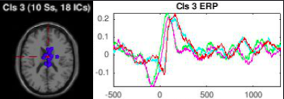
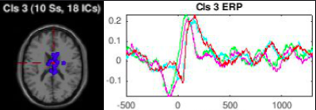
B3: TP+ (time and amp |P| > |T|) LR- Biphasic
ERP: Biphasic (negative/positive). Press: has a larger negative trough before tap;
Tap: smaller initial negative, not preceding tap, shifted later in time (but this pattern appears often and may be due to tap/press parameters).
Downward slope before 0.
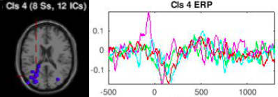
B4: TP+ (time) LR- (Trough, PR Biphasic) Mirror: B11
Mainly a negative peak at ~200 ms (Press right has a earlier positive peak before press. It would be useful to check variance to see if stat significant.) The shift b/w two bottom peaks (tap and press right) could be due to latency.
Right troughs slightly lower than left.
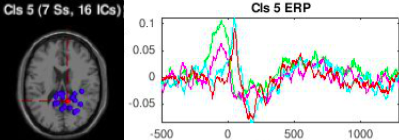
B5: TP+ (time) LR+ (amp L>R), Biphasic, Mirror: B6
ERP: Biphasic (posive/negative).
Press: broader positive peak, smaller negative
Tap: sharp positive/negative peaks. In both, Left is higher.
Overall a lot of similarity b/w Ziyi's 8 and 9, and Shannon's 3 and 11 (and see which B matches those). Would be useful to look at individual IC, and topoplot for all 3 + 2 clusterings (Brian (1), Ziyi (2), Shannon (2)).
(Better ERP match with Z8 & S3 ?).
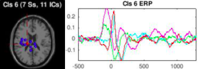
B6: TP+ (time) LR+ (only for press; amp, R>L), biphasic, Mirror: B5
Maybe Z11 is similar with its dipoles.
Press: Has broader peak
Tap: not much L/R difference
- Some difference right after 0 but synchronizes again
Slight L/R distinction overall
L/R mirror of B5? (although peaks higher)
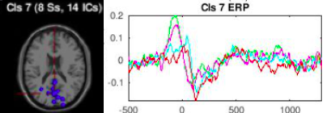
**B7: TP+(amp; pre t=0) LR-, biphasic
Not as much of a TP time difference compared to others.
Mostly press vs tap difference. Tap slightly below.
On avg left slightly above right (esp initial peak; mostly for tap).
Tap: L/R distinction ~800 ms
Maybe symmetric to B5.
Press & Tap difference in the amplitude of the positive peak
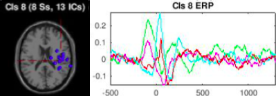
B8: TP+(time) LR+ (amp L>R), Biphasic emphasis on peak
LR diff: left seems to oscillate w/ higher amp
ERP could be a L/R mirror of B6.
Very similar to B5 (except t=0)?
RIght amplitude < left

B9: TP+ (amp and time(?)) LR+ (For tap, in time pre t=0, then amp), multiphasic/chaotic (peak trough peak for tap)
Tap left before TR around 0. Also Tap's strong activity before 0 is interesting.
Mostly T/P difference, where tap peaks first (while p troughs). (polarity inversion); amp inverted
Left slightly above right after t=0
Tap left also peaks slightly before tap right before t=0
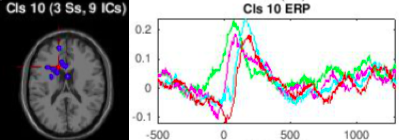
B10: TP+ (time) LR+ (amp L>R), biphasic
Synchronous for most part; tap slightly later. PL broader start and early response.
Downard slope before 0.
Left slightly above right.
Could shift time scale to line them up; investigate ERP plot separately. (notes on journal)
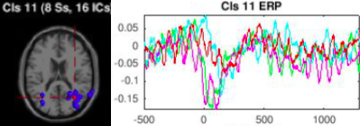
B11: TP+ (time and amp), LR-, large trough, high oscillation, Mirror: B4
P/T difference, especially @ t=0.
Left slightly above right especially for tap.
Would be useful to use same vertical scale for all plots (to compare w/ B4's ERP).
Dipoles mirror B4.
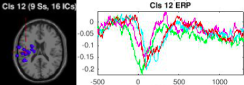
B12: TP+ (time and amp) LR+ (amp;only for press), big trough
TP difference unless latency shift: press before tap, but also deeper troughs.
- Press left has earlier, stronger response
Press' right is higher (maybe not statistic sig.)
dipole plot could indicate contralateral inhibition, possibly beta desync?
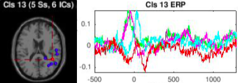
**B13: PT+ (amp and time) LR+ (amp L>>R;mostly for tap), Big Peak
☆ Noted as interesting. ERP seems to prefer Left.
All of press peaks but only tap left peaks.
Warning: low IC count
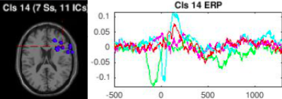
B14: PT+ (time) LR + (amp |L| >>> |R|), biphasic
Left preference (troughs first, but before t=0 which is interesting).
Tap left slightly above at ~100ms
Most of press left before peak press occurs.
Ziyi's not similar